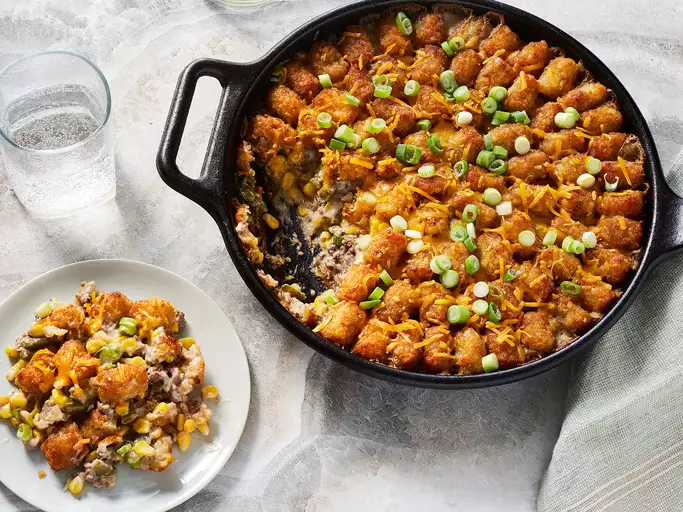

Tater Tot Dish

Description
This one pot tater tot hotdish is the ultimate comfort food: Crispy
pillowy tater tots are paired with ground beef, cream of mushroom soup,
green beans, and sweet corn.
Ingredients
- 2 tablespoons olive oil
- 2 cups chopped yellow onion
- 1 pound ground beef
- 1/2 teaspoon garlic powder
- 1/2 teaspoon onion poweder
- 1/2 teaspoon black pepper
- 2 cans condensed cream of mushroom soup
- 2 cups frozen cut grean beens
- 2 cups frozen sweet corn
- 1 1/2 pounds frozen tater tots
- 1/4 teaspoon seasoned salt
- 1/2 cup shredded sharp cheddar cheese
- 2 small scallions
Steps
- Preheat the oven.
- Cook the things.
- Cook in the oven.
- Layer the lasagna according to the recipe instructions.
- Cover with foil and bake.
- Let the lasagna rest before serving.